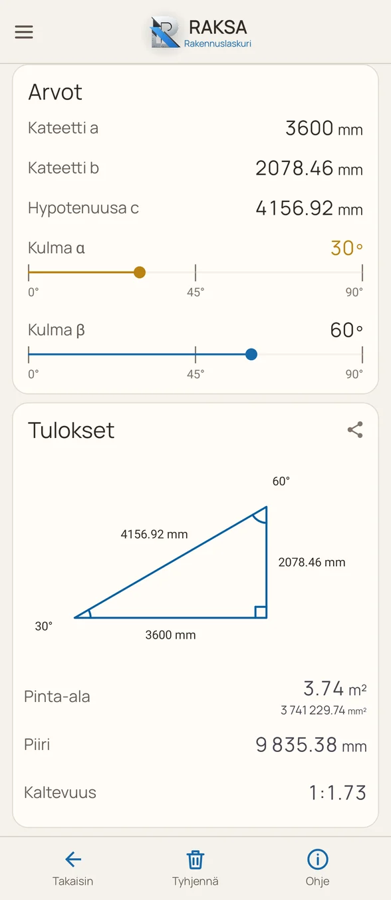

01
Kolmiolaskin
Anna kaksi arvoa, joista ainakin toinen on sivu. Raksa laskee muut sivut, kulmat, pinta-alan, piirin ja kaltevuuden jo kirjoittaessasi.
- Kateetit, hypotenuusa sekä kulmat α ja β
- Kulmasäädin pysähtyy yleisiin kaltevuuksiin, kuten 1:2 ja 30°
- Tuloksena kolmion kuva, pinta-ala, piiri ja kaltevuussuhde
